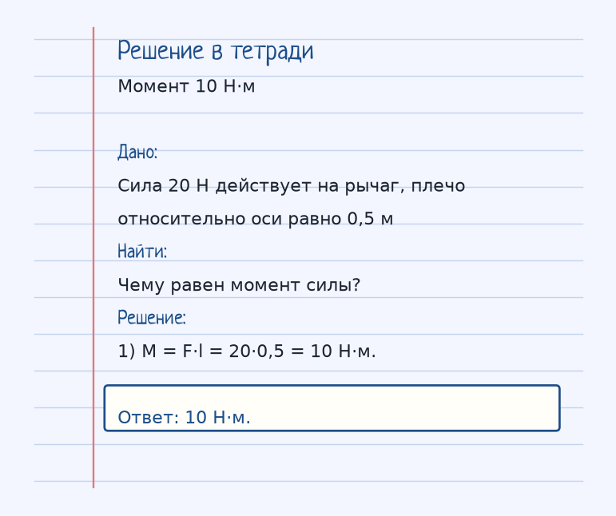

Держи картинку, не строчку. Если можешь показать рукой, куда едет тело и что его толкает, формула уже почти твоя. Ниже — как устроена тема «Момент силы (Условие равновесия)», где обычно спотыкаются, и два разбора до ответа.
Показ к теме. Это условие, не шпаргалка.
Сначала смысл
Рычаг находится в равновесии, если моменты сил, вращающие его по часовой стрелке, равны моментам сил, вращающим против.
Момент силы M = F·l показывает, насколько сила вращает тело вокруг выбранной оси. Плечо l — это не «длина рычага вообще», а кратчайшее расстояние от оси до линии, вдоль которой действует сила.
Рычаг в равновесии, когда моменты по часовой стрелке уравновешены моментами против. Можно записать это как равенство F₁·l₁ = F₂·l₂, если две силы вращают в разные стороны.
Отсюда качели: тяжёлого сажают ближе к оси, лёгкого — дальше. Меньшая сила на большем плече даёт тот же момент.
Как решать. Выпиши величины с рисунка к примеру «Момент 10 Н·м». Условие: Сила 20 Н действует на рычаг, плечо относительно оси равно 0,5 м. Чему равен момент силы? Дальше подставляй их в формулу этой темы и сверяй шаги с решением под картинкой — оно закрыто, пока не попробуешь сам. Второй рисунок, «Равновесие качелей», тот же приём на других данных: На одном конце рычага сила 400 Н имеет плечо 1 м. Какое плечо нужна силе 200 Н с другой стороны, чтобы моменты уравновесились? Если оба примера сходятся, тему можно нести на контрольную.
Как читать формулу
M = F · l
l — плечо силы (расстояние от оси вращения до линии действия силы).
M = F·l. l — плечо, расстояние от оси вращения до линии действия силы.
Чтобы осталось в голове
Качели. Чтобы уравновесить толстого дядю, нужно посадить ребенка дальше от центра.
На качелях толстого дядю уравновешивает ребёнок, если ребёнок сидит дальше от оси: плечо больше.
Где обычно спотыкаются
Плечо меряют до линии действия силы, перпендикулярно ей, а не вдоль рычага «на глаз», если сила косая.
Дальше две задачи. Сначала схема. Когда сам набросаешь ход, открой тетрадь — там дано, перевод в СИ, шаги и ответ в рамке.
Разбор 1
Момент 10 Н·м
Сила 20 Н действует на рычаг, плечо относительно оси равно 0,5 м. Чему равен момент силы?
На схеме только условие. Ответа там нет — его ещё надо получить.
Смотри на порядок, не на красивое число: сначала единицы, потом формула, потом ответ.
Дано. Сила 20 Н действует на рычаг, плечо относительно оси равно 0,5 м
В СИ.
Найти. Чему равен момент силы?
Решение.
M = F·l = 20·0,5 = 10 Н·м.
10 Н·м.

Разбор 2
Равновесие качелей
На одном конце рычага сила 400 Н имеет плечо 1 м. Какое плечо нужна силе 200 Н с другой стороны, чтобы моменты уравновесились?
На схеме только условие. Ответа там нет — его ещё надо получить.
Смотри на порядок, не на красивое число: сначала единицы, потом формула, потом ответ.
Дано. На одном конце рычага сила 400 Н имеет плечо 1 м
В СИ.
Найти. Какое плечо нужна силе 200 Н с другой стороны, чтобы моменты уравновесились?